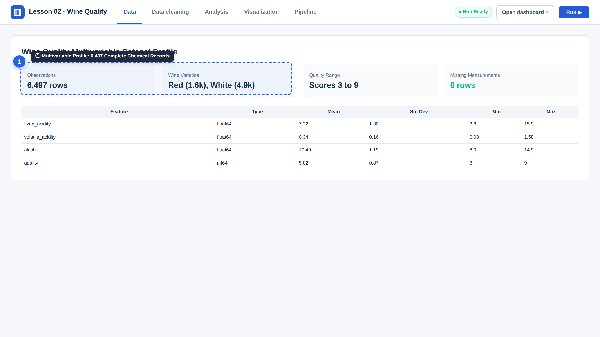
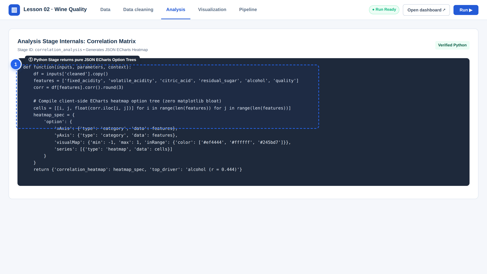
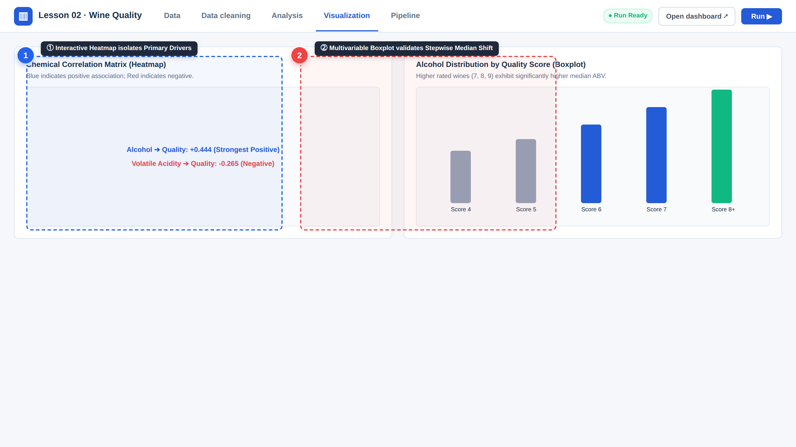

Lesson 02 / Wine Quality
Inspect distributions & correlations.
Which chemical properties drive sensory evaluations, and how do alcohol distributions shift across commercial quality tiers?
Multivariable correlation
Pearson correlation heatmap
Chemical boxplots
Distribution shift
Zero backend plot bloat
Part 1 · The Analytical Problem
Univariate summaries mask trade-offs.
Wine makers cannot adjust chemical inputs in isolation. Adjusting acidity affects perceived sweetness, while higher alcohol by volume (ABV) changes mouthfeel and body. If analysts look only at individual means, they miss the compound relationships that separate award-winning wines from table wines.
In this lesson, we study 6,497 commercial vinho verde wine samples (1,599 red wines and 4,898 white wines). Our objective is to calculate pairwise linear relationships across 11 physicochemical measurements and visualize how alcohol distributions shift from score 3 up to score 9.
Part 2 · The Visual Concept
Pairing heatmaps with tiered boxplots.
1. Symmetric Correlation Heatmap
Computes the Pearson correlation coefficient \(r \in [-1, 1]\) across all numeric features. Uses a diverging color scale: blue for strong positive associations (e.g. alcohol and quality, \(r = +0.444\)), red for strong negative associations (e.g. volatile acidity and quality, \(r = -0.265\)), and white for neutral independence.
2. Tiered Quality Boxplots
While correlation summarizes the entire dataset in a single number, boxplots show the median, interquartile range (IQR), and spread within each quality score. This reveals whether high quality requires a threshold level of alcohol or merely benefits from it on average.
Part 3 · Data Dictionary
Wine Quality Dataset (UCI Repository / Cortez et al.).
6,497 source samples
1,599 red wines
4,898 white wines
0 missing measurements
Part 4 · Step-by-Step Instructions
Build the wine analysis in WPS-AI Studio.
01
Upload Data & Establish Domain Context
Launch the studio via python launcher.py. Create a new project, upload wine_quality.csv, and paste the following into the Business context field:
Each row is one commercial vinho verde wine sample. Quality is an integer score from 3 to 9. Fixed acidity, volatile acidity, citric acid, residual sugar, and alcohol are continuous chemical measurements. Variety is red or white.
02
Prompt the AI Stage Creator
In the Chat composer, set the context to Project and send the following prompt:
Build an analysis pipeline computing the Pearson correlation matrix for chemical features against quality.
Generate an ECharts correlation heatmap and a multivariable boxplot showing alcohol distribution by quality score.
Add a wine variety selector on cleaned data (All, red, white).
Compute KPIs for Total Samples, Average Alcohol %, and Top Correlated Driver.
Save stages; I will select Run.
Review the proposed changes and select Apply. Then select Run ▶ in the top header.
Part 5 · Annotated Screenshot Reference
Compare against the verified Studio UI.
Use these full-browser annotated captures to verify each stage of your execution:

Annotated Guidance: ① Confirm the data profiler reads 6,497 observations with zero missing cells across 12 features. The quality score spans from 3 to 9 with a mean of 5.82.

Annotated Guidance: ① Inspect the Analysis Python function. It calculates pairwise Pearson correlations and formats the result as a pure client-side Apache ECharts option tree with zero backend matplotlib dependencies.

Annotated Guidance: ① Heatmap confirms alcohol is the strongest positive driver (+0.444) while volatile acidity is the strongest negative penalty (-0.265). ② Tiered boxplot demonstrates that higher-scoring wines (scores 7 and 8+) exhibit higher median ABV (11.5% to 12.0%).
Part 6 · Worked Reference Dashboard
Interactive Reference Chart & Checkpoints.
Verify your calculations against the live reference chart below:
Part 7 · Troubleshooting
What to check if numbers differ.